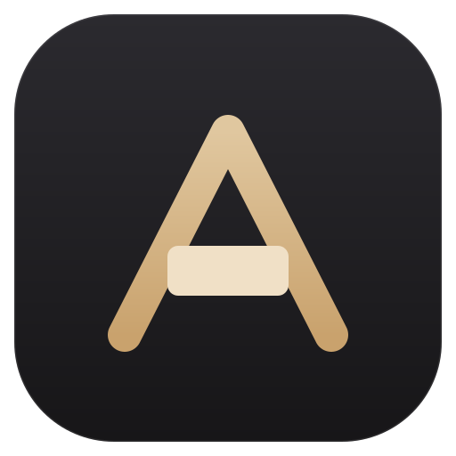
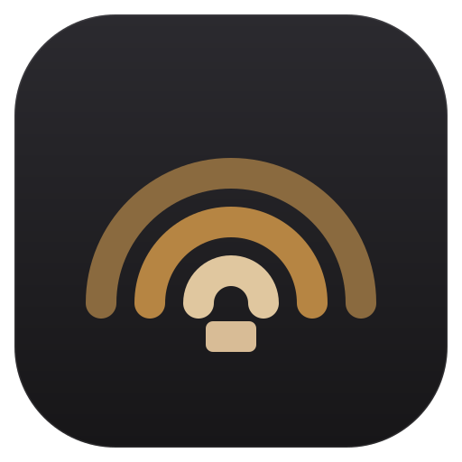
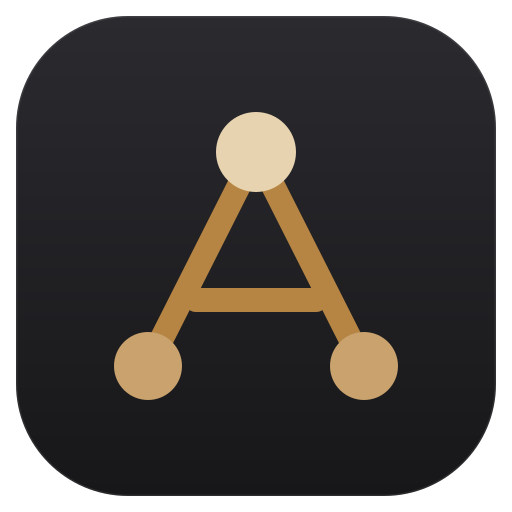
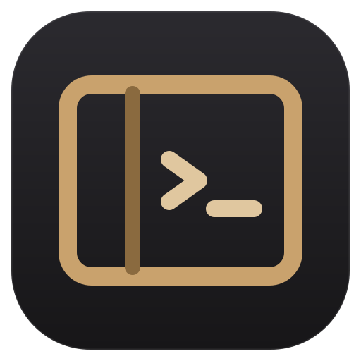

아이콘 후보
거미를 대신할 넷입니다.
지금 아이콘(파란 거미)은 앱이 앰버·따뜻한 회색으로 바뀌기 전에 만든 것이라 화면과 따로 놉니다. 넷 다 같은 팔레트로 그렸고, 작게 줄였을 때 뭉개지지 않는 것만 남겼습니다. 번호로 알려 주시면 앱·설치본·사이트·영상에 한 번에 반영합니다.

A. 프롬프트 A
이니셜 + 터미널A 의 가로획을 커서 블록으로 바꿨습니다. 이름 첫 글자와 "터미널"이 한 글자 안에서 만납니다. 넷 중 가장 앱 아이콘답고 16px 에서도 삼각 골격이 남습니다.

B. 파문
이름의 뜻아라는 바다를 뜻하는 우리말입니다. 세 겹의 물결은 A.R.A 세 글자이자 원격까지 닿는 신호입니다. 넷 중 가장 단순해서 아주 작을 때 제일 잘 버팁니다. 대신 "터미널"이라는 성격은 그림만으로 읽히지 않습니다.

C. 이어진 노드
AI Remote Agent내 PC · 원격 · 에이전트 셋이 한 삼각형으로 묶이고, 그 삼각형이 A 를 이룹니다. 위 꼭짓점(에이전트)만 밝습니다. 지금 거미가 갖고 있던 "연결된 점" 아이디어를 거미 없이 이어받은 안입니다.

D. 한 창
제품이 하는 일왼쪽 좁은 칸(파일 트리)과 오른쪽 프롬프트. "한 창에 다 있다"는 제품의 성격을 이니셜 없이 그림 하나로 말합니다. 넷 중 가장 설명적이지만, 선이 많아 16px 에서는 디테일이 뭉갭니다.